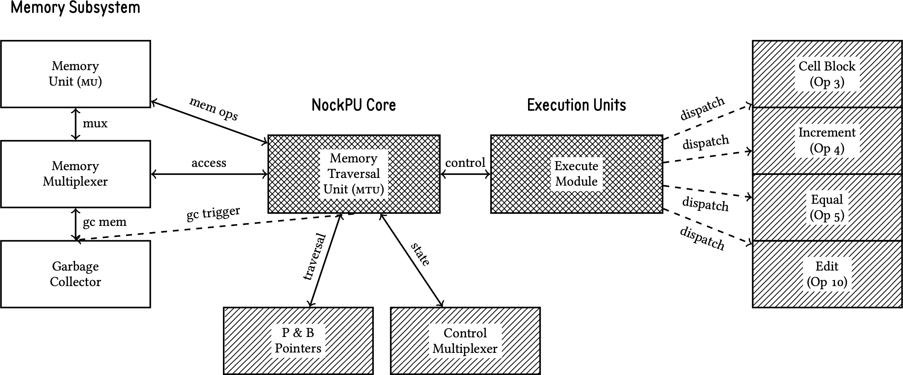
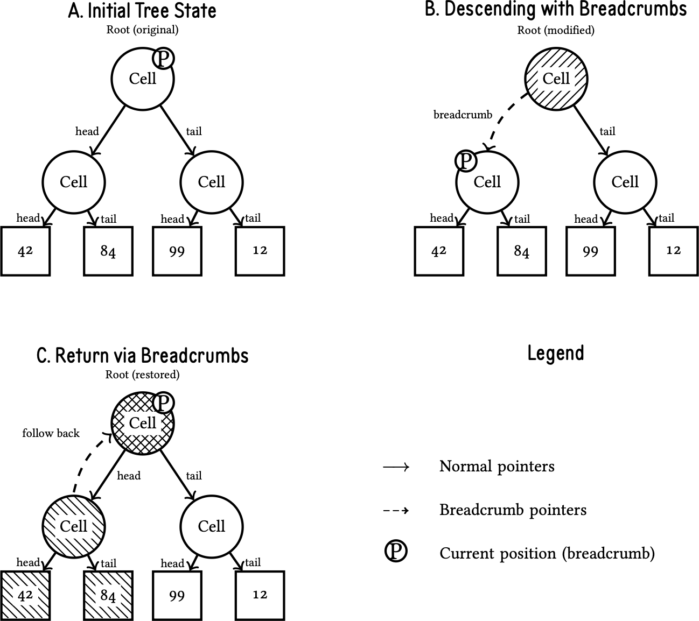
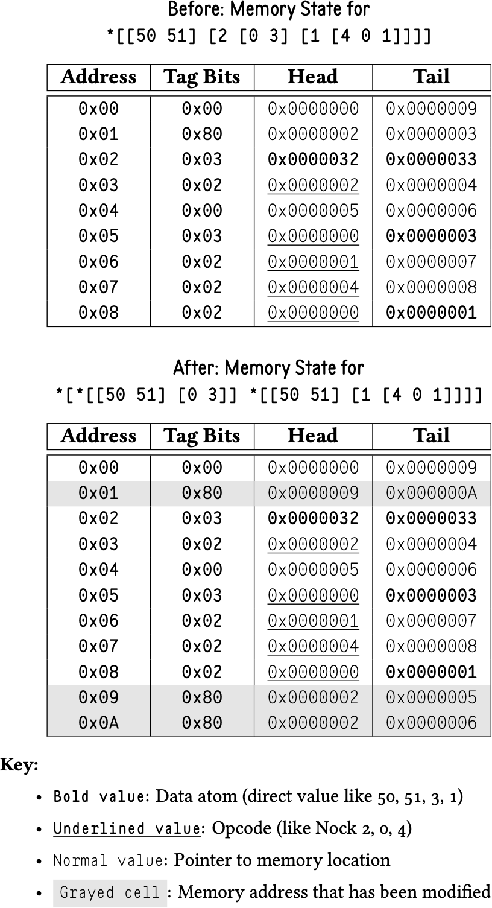

This paper presents the design, implementation, and evaluation of NockPU, a hardware processor that directly executes Nock 4K, a minimalist combinator calculus serving as the foundation for the Urbit computing platform. The research demonstrates the feasibility of implementing all twelve Nock operations in hardware using fpga-based graph reduction techniques. Key architectural decisions include a cell-based memory representation optimized for 64-bit words, stackless tree traversal using breadcrumb techniques, and integrated Cheney-style copying garbage collection. Performance analysis identifies two primary challenges: excessive memory consumption due to intermediate structure creation during reduction, and computational complexity arising from the graph transformation approach required by combinator reduction. The implemented garbage collector successfully addresses memory consumption issues, preventing system crashes during complex computations. While computational efficiency remains challenging compared to traditional architectures, the NockPU establishes that hardware Nock 4K implementation is viable and provides a foundation for specialized functional computation with advantages in determinism and semantic clarity.
Combinator calculi represent a fundamental approach to computation based on the application and reduction of combinators – operators that compose and transform data without requiring named variables. Nock is a specific combinator calculus developed as the foundation of Urbit, a clean-slate computing platform. It provides a deterministic, stateless computing environment that trades performance for perfect semantic clarity. While Nock interpreters typically run in software environments (e.g., the C-based Vere interpreter and Rust-based NockVM interpreter for Urbit), little exploration has been done regarding the direct implementation of Nock in hardware.
Implementing Nock in hardware presents unique challenges fundamentally different from traditional assembly languages. While conventional processors operate on byte buffers stored in linear memory arrays, Nock computation operates on nouns – recursive tree structures that exist as linked data rather than contiguous memory blocks. This fundamental difference means that traditional hardware architectures, optimized for sequential memory access patterns and fixed-width data types, are poorly suited for the tree traversal and dynamic memory allocation patterns inherent to Nock execution. The challenge lies not merely in implementing the Nock operations themselves, but in developing memory representations and traversal mechanisms that can efficiently handle the recursive, pointer-based data structures that define Nock’s computational model.
The motivation behind this research was initially quite straightforward: to address skepticism about whether Nock could be effectively implemented in hardware.
Hardware implementation of functional languages has historical precedent, with notable examples including the skim (s, k, i reduction machine) developed at Cambridge in the 1970s and more recent work on The Reduceron at the University of York. However, these projects have typically focused on more traditional functional programming languages rather than the minimal, axiomatic approach of Nock. Additionally, most prior research has not sufficiently addressed the challenges of scaling such systems to utilize both on-chip and off-chip memory effectively.
This project aimed to answer several key questions:
How can Nock’s nouns and operations be efficiently represented in hardware memory?
What hardware architecture best supports the pattern of execution required by Nock?
How can tree traversal be implemented without a stack-based approach?
What performance characteristics emerge from a hardware implementation compared to software interpreters?
The primary objective was to build a Verilog-based NockPU that could perform all standard Nock operations, thereby demonstrating the feasibility of hardware-based combinator reduction while identifying optimal design patterns for such an implementation.
Nock is a minimalist combinator calculus defined by a small
set of axiomatic rules (~sorreg-namtyv, 2018). Its specification
begins with: “A noun is an atom or a cell. An atom is a
natural number. A cell is an ordered pair of nouns." The
computational core of Nock is expressed through reduction
rules that transform nouns based on operator codes. For
example, the reduction rule *[a 0 b] performs a slot operation
(tree addressing), while *[a 2 b c] evaluates *[*[a b] *[a c]], and
so forth.
Nock’s extreme simplicity makes it an interesting
target for hardware implementation. It requires only
a handful of operations, has no need for floating-point
arithmetic, and functions in a completely deterministic
manner (~sorreg-namtyv et al., 2016). Yet, this same
simplicity can lead to computational inefficiency when
compared to traditional architectures, as Nock requires graph
transformations for even basic arithmetic operations.
Field-Programmable Gate Arrays (fpgas) allow for reconfigurable digital hardware design, making them ideal for prototyping novel processor architectures. Unlike traditional software that executes sequentially, hardware designs in languages like Verilog describe circuits where operations occur in parallel, governed by clock cycles.
The design process involves:
Creating a high-level design using Hardware Description Language (hdl)
Building test benches to verify functionality
Synthesis (converting hdl to netlist)
Place and Route (mapping netlist to fpga resources)
Timing analysis and program file generation
Several significant projects have attempted to implement functional programming languages directly in hardware:
skim (s, k, i reduction machine): Developed by Clarke et al. at Cambridge in the 1970s and 1980s (Clarke et al. (1980); Norman, Clarke, and Stoye (1984)), skim implemented combinatory logic directly in hardware. It pioneered many of the techniques for graph reduction that influenced later work.
The Reduceron: More recently, work at the University of York by Naylor and Runciman has produced The Reduceron (Naylor and Runciman (2008); Naylor (2009)), an fpga-based graph reduction machine initially designed for executing Haskell programs using basic combinators (s, k, i, b, c). Later versions moved to more complex supercombinator implementations.
While these implementations provide valuable precedent, they differ from the NockPU in several important ways:
They primarily target conventional functional languages rather than a minimal combinator calculus like Nock
They typically employ stack-based reduction strategies
They have focused less on scalability across on-chip and off-chip memory boundaries
Traditional approaches to traversing tree structures in hardware often rely on stack-based mechanisms, wherein a stack stores return addresses or intermediate state during traversal. While intuitive, this approach can introduce complexity in hardware implementation and potentially limit parallelism.
The stackless approach, in contrast, embeds navigational information directly within the tree structure itself, allowing for traversal without external stack state. This technique requires careful consideration of how to mark nodes during traversal and how to restore the tree to its original form afterward, but can offer advantages in certain hardware contexts.
Representing functional data structures efficiently in memory presents several challenges. Traditional memory is organized as a linear array of words, while functional data often takes the form of trees or graphs. Additionally, functional programs frequently create and discard temporary structures during evaluation, necessitating effective memory management strategies.
In hardware implementations, memory access patterns significantly impact performance. On-chip memory offers fast access but limited capacity, while off-chip memory provides greater capacity at the cost of higher latency. Effective design must carefully balance these tradeoffs.
The NockPU is designed as a specialized processor that directly executes Nock operations in hardware. Its architecture emphasizes several key principles:
Memory-centric design: Since combinator reduction is fundamentally about memory manipulation, the architecture prioritizes efficient memory operations.
Deterministic execution: The system maintains Nock’s deterministic nature, ensuring consistent results for identical inputs.
Stackless traversal: Rather than relying on a traditional stack for tree traversal, the NockPU embeds traversal state within the memory structure itself.
Scalability across memory boundaries: The design accommodates both on-chip and off-chip memory, allowing for larger computations than could fit in on-chip memory alone.
Figure 1 illustrates the overall system architecture of the NockPU, showing the interconnections between its major components. The Memory Traversal Unit serves as the central coordinator, managing communication between the execution subsystems and memory hierarchy. The architecture demonstrates a clear separation between control logic, execution units, and memory management, enabling modular design and efficient resource utilization.

The execution pipeline flows from the Memory Traversal Unit to specialized operation blocks through the Execute Module, which acts as a dispatcher for different Nock opcodes. This design allows each operation type to be optimized independently while maintaining consistent control interfaces. The memory subsystem integrates traditional storage with garbage collection, providing the specialized memory management required for combinator reduction.
The architecture implements explicitly single-threaded execution, consistent with Nock’s deterministic semantics. This design choice ensures that all computations proceed in a predictable, sequential manner, eliminating race conditions and maintaining the mathematical purity that characterizes Nock evaluation.
The NockPU represents Nock nouns using a custom memory format. Each memory cell is 64 bits wide, divided as follows:
8 tag bits (highest bits)
28 bits for the head noun
28 bits for the tail noun
This representation allows for efficient storage of Nock’s binary tree structure while providing room for necessary metadata. The 28-bit limitation for nouns was chosen based on practical fpga constraints: most commercially available fpgas have at most 256MB of directly accessible on-board memory, making 28-bit addressing sufficient while maintaining efficient 64-bit word alignment. This design choice facilitates straightforward scaling across different fpga platforms, as the architecture can be trivially adjusted for larger memory configurations when available, though the architecture includes provisions for handling arbitrarily large atoms through linked representations.
Tag bits represent auxiliary metadata embedded within memory words to support architectural features beyond basic data storage. In traditional von Neumann architectures, such metadata is typically maintained in separate control structures or registers. However, the NockPU’s specialized design for combinator reduction necessitates embedding control information directly within the memory representation to enable efficient stackless traversal and cell-based addressing.
The NockPU’s tag bit architecture serves several critical functions essential for hardware-based functional computation. The stackless tree traversal mechanism requires embedding traversal state within memory cells themselves, using dedicated bits to track which branches have been visited during tree navigation. The cell-addressed memory model demands type information to distinguish between atoms and cells at the hardware level. Additionally, execution control bits mark cells requiring evaluation, while reserved bits provide extensibility for future architectural enhancements.
Table 1 provides a complete specification of the 8-bit tag field structure used in the NockPU’s 64-bit memory words. Each tag bit serves a specific architectural purpose, from execution control to traversal state management, enabling the processor to maintain the semantic clarity of Nock computation while achieving practical hardware implementation.
|
|
|
|
| Bit | Name |
Explanation |
|
|
|
|
| 63 | Execute |
Marks cell as requiring execution |
| 62 | Stack |
Contains operation code and operand |
| 61 | Reserved |
Reserved for future extensions |
| 60 | Large Atom |
Atom larger than 28 bits |
| 59 | Head Traversal |
Tracks head traversal state |
| 58 | Tail Traversal |
Tracks tail traversal state |
| 57 | Head Tag |
Head is atom (0) or cell (1) |
| 56 | Tail Tag |
Tail is atom (0) or cell (1) |
|
|
|
|
Example: The Nock cell [42 43] is represented as a 64-bit word with the following bits:
| Tag bits (63–56): | 00000011\(_2\) |
| (both head and tail are atoms) | |
| Head (55–28): | 0x000002A\(_2\) |
| (28-bit representation of 42) | |
| Tail (27–0): | 0x000002B\(_2\) |
| (28-bit representation of 43) | |
| Complete word: | 0x03000002A000002B\(_2\) |
In the NockPU memory model, atoms (natural numbers) are represented directly within the 28-bit fields when possible. For atoms that exceed this limit, the system can use multiple memory cells linked together.
Cells are represented as pointers to other memory locations. When both the head and tail of a cell are direct atoms, they can be stored directly within a single memory word. When either is a cell, the corresponding field contains a pointer to another memory location.
The NockPU implements a stackless approach to tree traversal (Burrows, 2009) using two primary pointers:
Program Pointer (P): Points to the current node being processed
Back Pointer (B): Points to the previous node in the traversal
Together, these pointers allow the system to navigate the tree structure without requiring a separate stack. The approach fundamentally works by leaving “breadcrumbs" in the form of modified pointers that enable retracing steps back up the tree after descending.
The stackless traversal mechanism operates by temporarily modifying tree pointers to create navigational breadcrumbs, as demonstrated in Figure 2. This approach eliminates the need for external stack memory while maintaining the ability to navigate complex tree structures during Nock evaluation.

The traversal sequence shown in the figure illustrates the three-phase operation: initialization, descent with breadcrumb creation, and return via breadcrumb following. In subfigure A, the tree exists in its canonical form with normal pointer relationships. Subfigure B shows the critical breadcrumb creation phase, where the processor modifies the root cell’s head pointer to store a return path before descending into the left subtree. Subfigure C demonstrates the return mechanism, in which the breadcrumb is followed back to the root, restoring the original pointer structure while marking the left subtree as visited.
As the processor traverses the tree, it modifies the memory cells it visits, effectively leaving a trail that can be followed back up. When descending into a subtree, the processor redirects the pointer in the left part of the cell to point to the parent node, from which execution flow just came. This creates a pathway back up the tree.
The tag bits for head and tail traversal (bits 59 and 58) track which branches have been visited, allowing the processor to determine which subtree to explore next during traversal.
This mechanism ensures that:
The processor can always retrace its steps
The original tree can be reconstructed after traversal
Shared subtrees remain unmodified, preserving the integrity of the graph
The Memory Traversal Unit (mtu) serves as the master controller for the NockPU, orchestrating the overall execution flow. It performs several key functions:
Initiates tree traversal to find nodes marked for execution
Maintains the program and back pointers
Passes control to specialized execution modules when appropriate
Coordinates memory access through the memory multiplexer
The mtu operates according to a finite state machine that manages the complex coordination between memory operations, tree traversal, and execution control. The state machine includes states for memory access initiation, traversal coordination, execution delegation, and result handling. State transitions are triggered by completion signals from subordinate modules, memory operation acknowledgments, and the detection of execution markers within the traversed tree structure. This state-driven approach ensures that all memory operations complete properly before proceeding and that control flow remains deterministic throughout the computation process.
The Execute module handles the reduction of Nock operations when triggered by the mtu. It receives the address and data for a cell marked for execution, performs the appropriate transformation according to the Nock operation code, and returns control to the mtu when complete.
This module contains specialized logic for each Nock operator (0 through 11), implementing their specific reduction rules. For operators that generate nested executions, the Execute module restructures the memory to reflect the transformed computation and marks the relevant cells for future execution.
In addition to the core Execute module, the NockPU includes several specialized modules for specific operations:
Cell Block: Handle type checking for the cell operator (opcode 3)
Increment Block: Implement increment operations (opcode 4)
Equal Block: Perform equality comparisons (opcode 5)
Edit Block: Handle tree modification for the replace operator (opcode 10)
These specialized modules allow for more efficient implementation of specific operations and better utilization of hardware parallelism.
The NockPU includes a comprehensive error detection and reporting system to maintain system integrity during execution. When an error condition is encountered—such as malformed nouns, invalid operation codes, or memory access violations—the system raises an error signal and provides diagnostic information through an error code bus. This approach allows for graceful error handling while maintaining the deterministic nature of Nock execution, ensuring that invalid computations are detected rather than producing undefined results.
The NockPU implements a Cheney-style copying garbage collector based on the algorithm described by Clark (1976). This implementation addresses the significant memory consumption challenges inherent in combinator reduction by reclaiming memory occupied by intermediate structures that are no longer reachable.
The garbage collection process operates as follows:
Traversal Reset: Before initiating garbage collection, the system resets any active tree traversal state, ensuring that breadcrumb modifications are properly unwound and the memory representation returns to its canonical form.
Copying Phase: Using Cheney’s two-space copying algorithm, reachable nouns are copied from the current memory space to a clean memory partition, with pointer updates maintaining referential integrity.
Space Flip: Once copying is complete, the roles of the two memory spaces are exchanged, making the compacted space the active working memory.
A key advantage of this design is that computation state does not need to be recreated after garbage collection. Since the NockPU’s execution model is based on marking cells for execution rather than maintaining complex execution stacks, the collector can preserve all necessary computational context during the copying process. This allows garbage collection to occur transparently without requiring expensive state reconstruction. The tradeoff is that the traversal reset process takes some clock cycles, but this approach eliminates the need to maintain extra state during garbage collection.
The copying collector approach is particularly well-suited to the NockPU’s stackless architecture, as it eliminates the need to traverse and update complex stack structures during collection. The collector operates entirely through memory scanning and pointer updating, maintaining compatibility with the breadcrumb-based traversal mechanism used throughout the system.
The NockPU was implemented in Verilog, a hardware description language that allows for precise control over the digital circuit design. The implementation follows a modular approach, with separate components for different functional aspects of the processor.
Key Verilog modules include:
Memory Unit (memory_unit.v)
Memory Traversal Unit (mem_traversal.v)
Execute Module (execute.v)
Specialized Operation Blocks
Memory Multiplexer (memory_mux.v)
Control Multiplexer (control_mux.v)
Each module was designed with clear interfaces and tested independently before integration.
A comprehensive testing framework was developed to verify the correctness of the NockPU implementation across multiple levels of abstraction:
End-to-End Testing: The primary verification approach uses an end-to-end test bench (execute_tb) that inputs known Nock formulas and compares the resulting output with a reference Nock interpreter. This approach ensures semantic equivalence between the hardware implementation and established software interpreters, validating that the NockPU produces correct results for complete Nock programs.
Component-Level Testing: Individual subsystems are verified through dedicated test benches:
Memory traversal test bench: Verifies the correctness of the stackless tree traversal mechanism, ensuring proper navigation and breadcrumb management
Memory operations test bench: Validates basic memory read, write, and allocation operations across the bisected memory architecture
This modular testing approach allows for isolation of functionality and systematic debugging, enabling verification of both individual components and their integration. The test benches provide comprehensive coverage of the processor’s operational modes and edge cases, ensuring robust implementation of the Nock specification.
The simplest Nock operations are implemented directly within the memory traversal and execution modules:
Slot Operation (*[a 0 b]) Implemented by traversing the subject tree according to the address pattern specified by b. The implementation uses a bit-wise approach where each bit in the address determines whether to follow the head or tail pointer.
Constant Operation (*[a 1 b]) Simply returns the constant b regardless of the subject. This is implemented by writing the value of b directly to the result cell.
Operations that transform the tree structure are implemented through carefully orchestrated memory manipulations:
Evaluation (*[a 2 b c]) Constructs a new tree representing *[*[a b] *[a c]], marking the appropriate cells for execution. This operation demonstrates the NockPU’s approach to graph transformation, where complex Nock operations are implemented by restructuring memory to reflect the semantically equivalent expanded form.
Figure 3 illustrates the memory transformation process for Nock opcode 2, showing how the original nested structure is converted into separate evaluation branches. The transformation allocates new memory cells (addresses 0x09 and 0x0A) to represent the two evaluation paths *[a b] and *[a c], while preserving the original subject data at address 0x02. The execute bits (0x80 in the tag field) mark the newly created cells for evaluation, allowing the processor to continue the reduction process on the transformed structure.

This approach exemplifies the NockPU’s philosophy of implementing complex operations through memory restructuring rather than traditional control flow. The deterministic nature of memory allocation ensures consistent behavior, while the tagging system provides the execution control necessary for proper evaluation sequencing.
Cell Testing (*[a 3 b]) Examines whether the result of *[a b] is a cell, returning the appropriate truth value.
Increment (*[a 4 b]) Increments the result of *[a b] by one, using specialized logic.
Equality (*[a 5 b c]) Compares the results of *[a b] and *[a c] for equality.
The conditional operation (*[a 6 b c d]) is particularly challenging due to its branching nature. In the NockPU, it is implemented by constructing the equivalent expression
*[a *[[c d] 0 *[[2 3] 0 *[a 4 4 b]]]]
directly in memory.
This approach, while computationally expensive, maintains semantic equivalence with the Nock specification and demonstrates how even complex operations can be expressed through graph transformation rather than traditional control flow.
Operations 7, 8, and 9 share a common implementation pattern in the NockPU: they perform graph reduction by writing the equivalent expanded expression directly into memory, then rely on the normal execution order to evaluate the result correctly.
Composition (*[a 7 b c]) The NockPU writes the graph reduction *[*[a b] c] directly into memory. The normal execution order ensures that *[a b] is evaluated first, with its result becoming the subject for the subsequent evaluation of c.
Push (*[a 8 b c]) Implemented by writing the expansion *[[*[a b] a] c] into memory. The execution system constructs a cell containing both the result of *[a b] and the original subject a, creating the augmented context needed for evaluating c.
Call (*[a 9 b c]) Constructs the graph reduction *[*[a c] 2 [0 1] 0 b] in memory. This creates the function call frame structure, with normal execution order ensuring proper evaluation sequence: first *[a c] to obtain the function, then the constructed evaluation context.
This unified approach eliminates the need for specialized control flow logic in hardware. Instead, the NockPU leverages its graph reduction capabilities and the inherent ordering properties of the traversal mechanism to achieve correct execution semantics for all three operations.
The edit operation (*[a 10 [b c] d]) performs tree modification through the specialized Edit Block module. This operation implements the tree editing function #[b *[a c] *[a d]], which modifies the tree structure at address b by replacing the value with the result of *[a c] and continuing evaluation with *[a d].
The Edit Block uses careful pointer manipulation to modify tree structures while preserving shared subtrees and maintaining memory consistency. This operation requires sophisticated address calculation and memory management to ensure that tree modifications do not corrupt other parts of the computation.
The hint operation (*[a 11 [b c] d]) provides optimization opportunities by transforming to *[[*[a c] *[a d]] 0 3]. While semantically equivalent to its expansion, hints in the NockPU architecture are designed to enable hardware-specific optimizations or jetting.
The current implementation constructs the hint structure in memory and proceeds with standard evaluation. However, the architecture includes provisions for recognizing specific hint patterns that could be accelerated through specialized hardware modules or optimized execution paths, representing a key area for future performance improvements.
The NockPU employs a heap-based memory allocation strategy. A free memory chain links together all available memory cells, and operations claim cells from this chain as needed. The free memory pointer (F) tracks the next available cell.
This approach allows for dynamic allocation without requiring complex memory management hardware, albeit at the cost of potential fragmentation over time.
The memory architecture is designed to optimize the prevalent access patterns in Nock execution:
Cell-Based Memory Model: Each memory word represents a complete cell containing both head and tail components within the 64-bit word structure. Single atoms are represented as cells [a NIL], where NIL is the maximum direct atom value (28-bits).
Parallel Memory Operations: The design allows up to three memory operations per processor cycle: two reads and one write, enabling efficient traversal and manipulation of tree structures.
Memory Management Unit (mmu): The NockPU is shielded from off-chip memory complexity through an mmu that handles the translation between the processor’s cell-based addressing and the underlying memory hierarchy.
The NockPU evaluation encompasses both functional verification and performance analysis to assess the viability of hardware-based Nock execution. Testing methodology focuses on semantic equivalence validation through comparison with reference implementations, while performance analysis examines execution characteristics, memory usage patterns, and computational complexity across representative benchmark programs. The evaluation identifies both the capabilities and limitations of the current implementation, providing a foundation for understanding the tradeoffs inherent in hardware combinator reduction.
A comprehensive test bench was developed to evaluate the NockPU’s functionality and performance. The test bench allows for loading different Nock programs into memory, executing them, and analyzing the results.
The testing framework includes:
Memory initialization from hex files
Execution control and timing
Result validation
Performance measurement through cycle counting
Each Nock operation was verified through specific test cases designed to exercise different aspects of its functionality. Waveform analysis allowed for detailed examination of the processor’s behavior during execution, ensuring correctness and identifying potential optimization opportunities.
Performance benchmarking of the NockPU was conducted using representative Nock operations that exercise different aspects of the hardware architecture. The test configuration utilized a total memory allocation of 2048 words, split equally between active and garbage collection spaces (1024 words each), running at a 50MHz clock frequency. This memory constraint significantly impacts performance characteristics due to the frequency of garbage collection cycles required during computation.
The benchmark suite encompasses operations ranging from simple arithmetic to complex recursive functions, providing insight into the computational complexity of hardware-based combinator reduction. Table 2 presents comprehensive performance data for these representative operations, demonstrating the relationship between computational complexity and execution time in the NockPU architecture.
|
|
|
|
|
| Operation | Input | Cycles | Time |
|
|
|
|
|
| Decrement | n=3 | 32,640 | 652.8 s |
|
|
|
|
|
| Decrement | n=10 | 110,137 | 2.20 ms |
|
|
|
|
|
| Ackermann | A(1,2) | 1,214,348 | 24.29 ms |
|
|
|
|
|
| Ackermann | A(1,3) | 1,782,038 | 35.64 ms |
|
|
|
|
|
| Ackermann | A(2,1) | 3,266,189 | 65.32 ms |
|
|
|
|
|
| Ackermann | A(2,2) | 6,533,725 | 130.67 ms |
|
|
|
|
|
| Equality | *[50 5 [0 1] 0 1] | 406 | 8.12 s |
|
|
|
|
|
| Equality | *[[99 99] 5 [0 1] 0 1] | 479 | 9.58 s |
|
|
|
|
|
| Addition | (add 2 2) | 116,310 | 2.33 ms |
|
|
|
|
|
| Addition | (add 4 4) | 253,917 | 5.08 ms |
|
|
|
|
|
| Slot | Depth 3 | 164 | 3.27 s |
|
|
|
|
|
| Slot | Depth 7 | 156 | 3.12 s |
|
|
|
|
|
The benchmark results reveal several key performance characteristics of the NockPU architecture. Simple operations such as equality testing complete in hundreds of cycles, while complex recursive operations like the Ackermann function require millions of cycles due to extensive intermediate structure creation. The 1024-word memory constraint creates a distinctive “step function" behavior in the computational complexity analysis: when operations exceed available memory, garbage collection cycles introduce significant overhead, causing performance to degrade in discrete steps rather than smooth progression.
This memory-bounded performance profile is particularly evident in recursive operations, where the combination of exponential intermediate structure growth and periodic garbage collection creates compound performance effects. The deterministic nature of the architecture ensures consistent timing for identical operations, but the interplay between memory consumption and collection cycles makes performance prediction dependent on both algorithmic complexity and memory utilization patterns. These characteristics distinguish the NockPU’s performance profile from traditional architectures, where performance typically scales more predictably with computational complexity.
The most significant limitation initially encountered was excessive memory consumption due to the creation of intermediate structures during reduction. Early testing revealed that even moderately complex programs would quickly exhaust available memory without proper memory management.
For instance, a decrement operation on the number 10 would crash the system due to memory exhaustion. This limitation led to the implementation of the Cheney-style copying garbage collector described in Section 3.4.5, which successfully addresses these memory management challenges by reclaiming unreachable intermediate structures and maintaining system stability during complex computations.
Several performance bottlenecks were identified:
Memory Access Latency: Particularly when using off-chip memory, which is significantly slower than on-chip memory.
Sequential Reduction: The inherently sequential nature of certain reduction patterns limits parallelism.
Tree Traversal Overhead: The need to navigate complex tree structures introduces overhead compared to direct operations.
The implementation of the conditional operation *[a 6 b c d] proved particularly inefficient due to its expression as a complex tree transformation rather than a simple branch. This approach, while semantically pure, introduces significant overhead compared to traditional conditional execution.
While the current implementation supports 28-bit atoms, supporting arbitrarily large atoms is necessary for full Nock compatibility. The proposed implementation uses a structured approach where large atoms are represented as follows:
Header Cell: The head contains the length of the large atom, while the tail serves as workspace for the interpreter.
Data Storage: The address immediately following the header contains the first 64 bits of the large atom in little-endian format, with subsequent addresses containing additional 64-bit segments as needed.
This design requires specific modifications to atom-manipulating operations:
Increment Operation: Must reallocate the entire large atom and perform increment with carry propagation across all 64-bit segments, ensuring proper handling of size changes when carries extend the atom length.
Comparison Operations: Equality testing must traverse the complete atom representation, comparing both length and all data segments to ensure accurate results.
Garbage Collection: The existing Cheney-style collector can handle large atoms naturally by copying the header and all associated data segments during the copying phase, with no fundamental changes to the collection algorithm.
The memory allocation system remains unchanged, as large atoms are allocated as contiguous blocks following the header cell.
“Jetting" refers to the replacement of inefficient Nock code patterns with optimized implementations. A promising approach for hardware jetting involves using a secondary processor that:
Detects specific patterns in the Nock code
Executes optimized hardware implementations
Returns results to the main NockPU
This hybrid approach could dramatically improve performance for common operations while maintaining semantic equivalence with pure Nock.
The NockPU project provides insights into the relationship between computation models and hardware architecture. Traditional von Neumann architectures are optimized for imperative, state-based computation, while the NockPU represents an approach tailored for functional, stateless computation.
This work suggests that specialized architectures for specific computational paradigms may offer advantages over general-purpose solutions in certain contexts. The NockPU’s design choices, such as the stackless traversal mechanism and integrated garbage collection, illustrate how hardware can be adapted to better support the patterns inherent in combinator reduction.
The deterministic nature of Nock, combined with the potential power efficiency of specialized hardware, suggests applications in low-power computing environments where predictability is valued over raw performance.
Preliminary analysis suggests that a dedicated NockPU could offer significant power efficiency advantages over general-purpose cpus running Nock interpreters. The specialized nature of the architecture eliminates much of the overhead associated with general-purpose instruction decoding, branch prediction, and speculative execution. Additionally, the deterministic execution model prevents the power consumption variability that characterizes modern cpus with dynamic frequency scaling and complex power management.
Future work should include comprehensive power analysis and optimization of the architecture for low-power operation, particularly focusing on minimizing memory access energy and optimizing the garbage collection process for power efficiency.
The simplicity and determinism of the NockPU architecture could make it easier to formally verify than complex general-purpose cpus, opening possibilities for applications requiring high assurance of correctness.
The limited instruction set, deterministic execution model, and absence of speculative execution or complex branch prediction reduce the verification burden compared to modern processors. Applications in safety-critical systems, cryptographic processing, or environments requiring audit trails could benefit from this simplified verification process. However, the practical deployment of such systems would need to balance the verification advantages against the performance limitations inherent in the current implementation.
When compared to traditional cpu architectures, the NockPU reveals fundamental tradeoffs:
Performance vs. Simplicity: The NockPU sacrifices raw performance for semantic clarity and simplicity.
Flexibility vs. Specialization: General-purpose cpus offer flexibility across computing paradigms, while the NockPU is specialized for combinator reduction.
Memory Efficiency vs. Semantic Purity: The NockPU’s approach to computation requires more memory operations than optimized imperative code.
These tradeoffs suggest that the NockPU and similar architectures may find their niche in specialized applications rather than general-purpose computing.
The NockPU project has successfully demonstrated the feasibility of implementing the Nock combinator calculus directly in hardware, providing concrete architectural solutions for functional computation while identifying the fundamental challenges inherent to combinator reduction.
This work presents a complete hardware implementation of Nock using established techniques adapted for combinator reduction. The stackless tree traversal mechanism enables efficient navigation of Nock’s recursive tree structures without external stack management. The cell-based memory representation optimizes 64-bit words for Nock’s binary tree structures, with 28-bit nouns and 8 tag bits providing efficient metadata management. The integration of Cheney-style copying garbage collection directly into the processor architecture demonstrates that memory management can be successfully embedded as a hardware feature rather than remaining a software concern.
The research identifies two primary challenges to efficient hardware Nock execution: excessive memory consumption due to intermediate structure creation during combinator reduction, and computational complexity arising from the graph transformation approach required by Nock’s semantic model. The first challenge is successfully addressed through the implemented garbage collector, which prevents system crashes and maintains stability during complex computations. The second remains an area for future optimization.
The implementation demonstrates that all twelve Nock
operations can be realized in hardware through graph
reduction techniques, establishing a complete foundation for
Nock computation. While computational efficiency remains
challenging, the core architectural approach—particularly the
integration of garbage collection and cell-based memory
management—provides a viable foundation for specialized
functional computation that offers advantages in determinism
and semantic clarity over general-purpose architectures.

The author would like to thank ~master-morzod and
~fodwyt-ragful for helping with many technical questions and
~mister-todteg for funding this development.
Burrows, E. (2009). “A Combinator Processor.” In: Part II Computer Science Tripos.
Clark, Douglas W. (1976). “An Efficient List-Moving Algorithm Using Constant Workspace.” In: Communications of the acm 19.6, pp. 352–354. doi: 10.1145/360238.360249.
Clarke, T. J. W. et al. (1980). “skim—The S, K, I Reduction Machine.” In: Proceedings of the 1980 acm Conference on lisp and Functional Programming. New York City, NY: acm, pp. 128–135. doi: 10.1145/800087.802799.
Naylor, Matthew (2009). “Hardware-Assisted and Target-Directed Evaluation of Functional Programs.” PhD thesis. York, United Kingdom: University of York.
Naylor, Matthew and Colin Runciman (2008). “The Reduceron: Widening the von Neumann Bottleneck for Graph Reduction Using an fpga.” In: Implementation and Application of Functional Languages. Vol. 5083. Lecture Notes in Computer Science. Springer, pp. 129–146.
Norman, A. C., T. J. W. Clarke, and W. R. Stoye (1984). “Some Practical Methods for Rapid Combinator Reduction.” In: Proceedings of the 1984 acm Symposium on lisp and Functional Programming. New York City, NY: acm, pp. 159–166. doi: 10.1145/800055.802036.
~sorreg-namtyv, Curtis Yarvin
(2018)
“Nock
4K”.
url:
https://docs.urbit.org/language/nock/reference/definition
(visited
on
~2024.2.20).
~sorreg-namtyv, Curtis Yarvin
et al.
(2016).
Urbit:
A
Solid-State
Interpreter.
Whitepaper.
Tlon
Corporation.
url:
https://media.urbit.org/whitepaper.pdf
(visited
on
~2024.1.25).